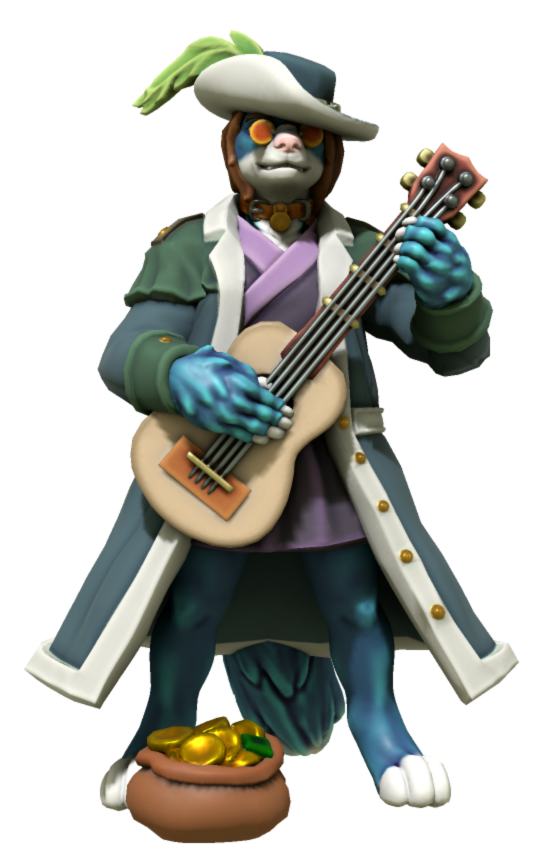
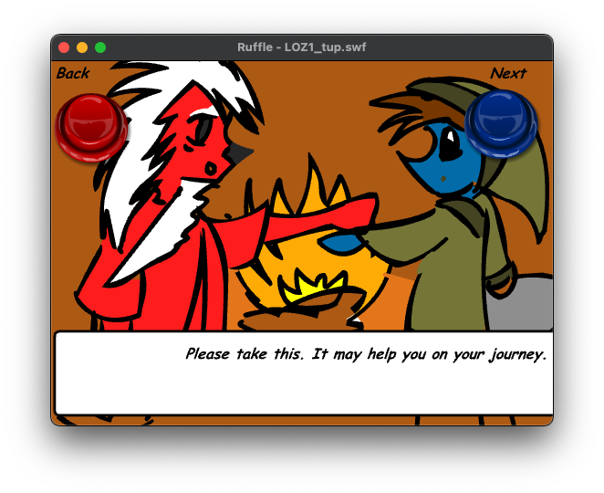

Introduction
Intended for D&D, AI Dungeon and alike, Legends of Zack is a fantasy world based on characters and locations from Casey Universe. At the heart of the world is Essence, a magical energy inside every furry that can be used to create and harness powerful spells.
Origins
Legends of Zack can trace its roots all the way back to 2005. Known as Legends of Z, at the time, Zack (who was simply Z back then) received a mallet as a gift from a wizard in order to defeat monsters. The idea was created by an old DeviantART friend going by T-Up.
The concept was revisited a few times in the over the years but wasn't until a friend showed me AI Dungeon and I got into D&D that the groundwork for Legends of Zack would eventually be made. It began when I wanted to use AI Dungeon's Wizard scenario to create magic system with Essence as the source. The way I went about refining that is a story in it of itself.
The Long Game
While creating the magic system, I wanted to keep the game endless because I had more fun trying to find the book than actually getting it, which there was always 50/50 chance of. After all, you begin in a ruin that is literally a dungeon. I was able to pull this off in early prototypes of the Essence magic system but it always took me away from the book's location.1 Got so crazy I managed to accidentally start a whole war between two Wizards and Rouges that would put Harry Potter to shame.
In order to tame the beast that I've unleashed, I realized I needed to create some balance. This came by adding a rather god-like I met at a hotel who would later become Artemis. Like getting the book, there is nearly a 50/50 chance you'll run into another wizard searching for the book too. So I decided to base antagonist off of the idea that there was a wizard before you and came up with Torneth. Not only did he come long before you but he unlocked a curse that forever has him chained to the book. Meaning, if you want to read it, you'll have to get through him.
Legends Reborn
On the D&D side of things, I had the idea of turning Zack into a D&D character. He is literally my most developed character in part due to the fact that I'm also a fan of him too. Yes I'm a fan of my character. To keep it fit with D&D's high fantasy setting, I dropped the Furry Blue DJ storyline and turned him bard with an acoustic character. In doing so, I realized I laid the groundwork to actually make Legends of Zack a reality.
It was when I was redoing Torneth that I decided to put the Essence, Torneth and Zack all under one roof and make Legends of Zack a reality.
This was due to the lack of world info keys that told the AI to stay within the ruin. Don't get me wrong, I still had fun.
Essence
Essence is the magic draws on the subtle galactic filaments that binds galaxies together. It is magic found creatures possess essence within themselves, making it the most widely available sources magic in the universe, but only a select few are able to tap into these energies, known as Mages. However, Essence is directly tied to stamina and requires consider amount of energy depending on how powerful the spell is. Losing too much essence can make a mage vulnerable to more harmful spells and potentially faint, if too much energy is lost. Luckily, essence is regenerate by simply sleeping, eating or using a health potion.
Runic Magic
Runic magic allows a mages to create or channels spells using the Essence into symbols and sigils. Historically runes were written in ancient Norse alphabets but now they are written with Latin alphabet. It is one of the most common form of non-verbal magic in part due to the fact they can be written on and with anything. As runes are used to create spells or represent the spells themselves, they are typically written in gibberish. Using detect magic, a mage can determine what spell a rune represents.
Background
While I'm not all that familiar with how runic magic works in common fantasy, the intended design to function like a programming language.
Kingdom of Larion
Built upon the bravery, cunning and craftsmanship of its past, the kingdom of Larion is now among the most fortunate kingdom in its corner of the world. Their industry, literacy and housing are among its current greatest strengths. Unfortunately they lack a little in trade and infrastructure. There are some opposing groups against the current leadership and this has been the case for a long time. However, the current greatest threat to the kingdom is imminent war, but the current leadership is working with the public to solve this issue. The furries of Larion are content. They wear minimal clothing, usually a tunic, loincloths, or robes and may go bottomless. They live rewarding lives and while income might be lacking, their alchemy helps relief most of their issues. Religion holds no real importance in their lives and, if anything, has made them more elegant.
Background
Larion is the default kingdom in AI Dungeon's fantasy sceneries. The world is not defined beyond it's name. The description itself was generated by Fantasy Name Generator which wind up including elements that could lead to the war, similar to what was experienced during The Long Game.
The Weave
Ranging from double to quadruple tracks, The Weave is a isolated railway realm for autonomous trains that travel across tracks to stations all over the world. Each train on the The Weave is powered by magic provided from the rails, but a mage can take control if they need do. All portals to the The Weave will drop them off at the nearest station.
Tracks
Harmless to creatures, magic from the tracks powers the autonomous trains and make them move. The Weave is primarily is a double-track railroad, one track in each direction. There are varies junctions in both directions that lead to sidings, yards and branch lines. In certain sections of The Weave, the tracks split from double to quadruple in order to handle increased traffic more during rush hour. Regardless of the number of tracks, there are signals in every direction.
Background
With the exception of The Infinity, the idea for The Weave actually thought up from the character created by AI Dungeon itself. I simply adapted and built upon it.
The Infinity
Owned by you, The Infinity is your personal express train that is constantly on the a move as it travels across The Weave. It is designed for your friends and mages that travels along the railroad. The Infinity is a multiple-unit train with seven sleep cars with one hybrid dining and lounge car in the center, each with a gangway connection connecting them all. The front and back of the train are hybrid sleeper and cab cars. The doors will only open for you, friends or other passengers on The Weave. Each car on the train has small indicator lights on the side of the vestibule that will tell if the train is moving or not, green and red, respectfully.
Background
Named after Cartoon Network's Infinity Train, this train was created by me as a safe haven. It's formation and design is directly based off of JR's 285 series, used by Sunrise Izumo and Seto routes. While autonomous, the lights on the train are there for conductors.
Torneth

Description
Torneth is a Tabaxi was once a famously wealthy wizard rumored to have disappeared. Truth was he had turned him into a black furred demon inside a ruined tower but no one knows why and refuses to say why. Torneth wears a top-half of an ox skull as a hat, a shredded shirt and loincloth. Though centuries old, Torneth looks quite young as he hasn't physically aged since becoming a demon. Despite his greed, he has mellowed out somewhat, revealing his true personality: he loves to collect fossils, read books, his wealthy behavior has since resurfaced. Torneth will even treat furries like a wealthy furry he once was. Like everyone else, Torneth has heard about the legendary Artemis and is quite fearful of his power.
Usage
AI Dungeon
Torneth was designed around AI Dungeon's Wizard scenario and is compatible with it. As described in his world entry above, he is intended to be the antagonist and is designed to keep the game truly endless.
In an early version of the character, Torneth was trapped in the The Book of Essence. This was replaced with Manual of the Phoenix due to the Essence functioning as Mana in Legends of Zack. As an unintended consequence, the AI would prioritize vampirism and necromancy because of that definition. This phenomenon was discovered long before Torneth's introduction and was simply an error on my part.
D&D
I'm not sure how well he would work in D&D campaign due to the fact he was intended to keep the game truly endless.
Artemis (Gigalak)

Description
Towering over most average furs with a muscular body that makes the guys jealous and women blush, Artemis is a legendary wizard who is your guardian and protector that you need only to ask for his help for him be summoned. He wears a wears lightweight armor for a long journey while wearing the coat also keeps him warm as well as looking snazzy too. Artemis is a powerful fox who has mastered every school of magic. Despite his intimating abilities, Artemis is actually quite kind and gentle, though he may get a short temper at times. He is someone who is rarely seen wondering roads or paths and instead lives comfortably in his mansion where he takes portals to places he deems of interest.
Background
Originally going by the name of Gigalak, which I often shortened to just Gig, Artemis started out as a character created by AI Dungeon during The Long Game. Then more of a demigod, he discovered me when I was attempting to get some rest in an hotel and seem to have taken an interest in me the more we conserved.
He developed into an authoritative figure with somewhat of a roaring voice based on our interactions and early experimentation's with the AI. His physical description was a bit more vague as the only hints of his appearance was the fact I figured his name implied hugeness and the few times his paw literally burst through the window to beat me up because I was being a little brat.
Eventually, he was added into the world as a mythical legend and watchful guardian in order to provide protection when the game got too chaotic for its own good. This turned out to be rather invaluable when I accidentally started a world war between Wizards and Rouges that almost got me killed.
Creative Commons Attribution-NonCommercial 4.0 International
Creative Commons Corporation (“Creative Commons”) is not a law firm and does not provide legal services or legal advice. Distribution of Creative Commons public licenses does not create a lawyer-client or other relationship. Creative Commons makes its licenses and related information available on an “as-is” basis. Creative Commons gives no warranties regarding its licenses, any material licensed under their terms and conditions, or any related information. Creative Commons disclaims all liability for damages resulting from their use to the fullest extent possible.
Using Creative Commons Public Licenses
Creative Commons public licenses provide a standard set of terms and conditions that creators and other rights holders may use to share original works of authorship and other material subject to copyright and certain other rights specified in the public license below. The following considerations are for informational purposes only, are not exhaustive, and do not form part of our licenses.
-
Considerations for licensors: Our public licenses are intended for use by those authorized to give the public permission to use material in ways otherwise restricted by copyright and certain other rights. Our licenses are irrevocable. Licensors should read and understand the terms and conditions of the license they choose before applying it. Licensors should also secure all rights necessary before applying our licenses so that the public can reuse the material as expected. Licensors should clearly mark any material not subject to the license. This includes other CC-licensed material, or material used under an exception or limitation to copyright. More considerations for licensors.
-
Considerations for the public: By using one of our public licenses, a licensor grants the public permission to use the licensed material under specified terms and conditions. If the licensor’s permission is not necessary for any reason–for example, because of any applicable exception or limitation to copyright–then that use is not regulated by the license. Our licenses grant only permissions under copyright and certain other rights that a licensor has authority to grant. Use of the licensed material may still be restricted for other reasons, including because others have copyright or other rights in the material. A licensor may make special requests, such as asking that all changes be marked or described. Although not required by our licenses, you are encouraged to respect those requests where reasonable. More considerations for the public.
Creative Commons Attribution-NonCommercial 4.0 International Public License
By exercising the Licensed Rights (defined below), You accept and agree to be bound by the terms and conditions of this Creative Commons Attribution-NonCommercial 4.0 International Public License ("Public License"). To the extent this Public License may be interpreted as a contract, You are granted the Licensed Rights in consideration of Your acceptance of these terms and conditions, and the Licensor grants You such rights in consideration of benefits the Licensor receives from making the Licensed Material available under these terms and conditions.
Section 1 – Definitions.
a. Adapted Material means material subject to Copyright and Similar Rights that is derived from or based upon the Licensed Material and in which the Licensed Material is translated, altered, arranged, transformed, or otherwise modified in a manner requiring permission under the Copyright and Similar Rights held by the Licensor. For purposes of this Public License, where the Licensed Material is a musical work, performance, or sound recording, Adapted Material is always produced where the Licensed Material is synched in timed relation with a moving image.
b. Adapter's License means the license You apply to Your Copyright and Similar Rights in Your contributions to Adapted Material in accordance with the terms and conditions of this Public License.
c. Copyright and Similar Rights means copyright and/or similar rights closely related to copyright including, without limitation, performance, broadcast, sound recording, and Sui Generis Database Rights, without regard to how the rights are labeled or categorized. For purposes of this Public License, the rights specified in Section 2(b)(1)-(2) are not Copyright and Similar Rights.
d. Effective Technological Measures means those measures that, in the absence of proper authority, may not be circumvented under laws fulfilling obligations under Article 11 of the WIPO Copyright Treaty adopted on December 20, 1996, and/or similar international agreements.
e. Exceptions and Limitations means fair use, fair dealing, and/or any other exception or limitation to Copyright and Similar Rights that applies to Your use of the Licensed Material.
f. Licensed Material means the artistic or literary work, database, or other material to which the Licensor applied this Public License.
g. Licensed Rights means the rights granted to You subject to the terms and conditions of this Public License, which are limited to all Copyright and Similar Rights that apply to Your use of the Licensed Material and that the Licensor has authority to license.
h. Licensor means the individual(s) or entity(ies) granting rights under this Public License.
i. NonCommercial means not primarily intended for or directed towards commercial advantage or monetary compensation. For purposes of this Public License, the exchange of the Licensed Material for other material subject to Copyright and Similar Rights by digital file-sharing or similar means is NonCommercial provided there is no payment of monetary compensation in connection with the exchange.
j. Share means to provide material to the public by any means or process that requires permission under the Licensed Rights, such as reproduction, public display, public performance, distribution, dissemination, communication, or importation, and to make material available to the public including in ways that members of the public may access the material from a place and at a time individually chosen by them.
k. Sui Generis Database Rights means rights other than copyright resulting from Directive 96/9/EC of the European Parliament and of the Council of 11 March 1996 on the legal protection of databases, as amended and/or succeeded, as well as other essentially equivalent rights anywhere in the world.
l. You means the individual or entity exercising the Licensed Rights under this Public License. Your has a corresponding meaning.
Section 2 – Scope.
a. License grant.
-
Subject to the terms and conditions of this Public License, the Licensor hereby grants You a worldwide, royalty-free, non-sublicensable, non-exclusive, irrevocable license to exercise the Licensed Rights in the Licensed Material to:
A. reproduce and Share the Licensed Material, in whole or in part, for NonCommercial purposes only; and
B. produce, reproduce, and Share Adapted Material for NonCommercial purposes only.
-
Exceptions and Limitations. For the avoidance of doubt, where Exceptions and Limitations apply to Your use, this Public License does not apply, and You do not need to comply with its terms and conditions.
-
Term. The term of this Public License is specified in Section 6(a).
-
Media and formats; technical modifications allowed. The Licensor authorizes You to exercise the Licensed Rights in all media and formats whether now known or hereafter created, and to make technical modifications necessary to do so. The Licensor waives and/or agrees not to assert any right or authority to forbid You from making technical modifications necessary to exercise the Licensed Rights, including technical modifications necessary to circumvent Effective Technological Measures. For purposes of this Public License, simply making modifications authorized by this Section 2(a)(4) never produces Adapted Material.
-
Downstream recipients.
A. Offer from the Licensor – Licensed Material. Every recipient of the Licensed Material automatically receives an offer from the Licensor to exercise the Licensed Rights under the terms and conditions of this Public License.
B. No downstream restrictions. You may not offer or impose any additional or different terms or conditions on, or apply any Effective Technological Measures to, the Licensed Material if doing so restricts exercise of the Licensed Rights by any recipient of the Licensed Material.
-
No endorsement. Nothing in this Public License constitutes or may be construed as permission to assert or imply that You are, or that Your use of the Licensed Material is, connected with, or sponsored, endorsed, or granted official status by, the Licensor or others designated to receive attribution as provided in Section 3(a)(1)(A)(i).
b. Other rights.
-
Moral rights, such as the right of integrity, are not licensed under this Public License, nor are publicity, privacy, and/or other similar personality rights; however, to the extent possible, the Licensor waives and/or agrees not to assert any such rights held by the Licensor to the limited extent necessary to allow You to exercise the Licensed Rights, but not otherwise.
-
Patent and trademark rights are not licensed under this Public License.
-
To the extent possible, the Licensor waives any right to collect royalties from You for the exercise of the Licensed Rights, whether directly or through a collecting society under any voluntary or waivable statutory or compulsory licensing scheme. In all other cases the Licensor expressly reserves any right to collect such royalties, including when the Licensed Material is used other than for NonCommercial purposes.
Section 3 – License Conditions.
Your exercise of the Licensed Rights is expressly made subject to the following conditions.
a. Attribution.
-
If You Share the Licensed Material (including in modified form), You must:
A. retain the following if it is supplied by the Licensor with the Licensed Material:
i. identification of the creator(s) of the Licensed Material and any others designated to receive attribution, in any reasonable manner requested by the Licensor (including by pseudonym if designated);
ii. a copyright notice;
iii. a notice that refers to this Public License;
iv. a notice that refers to the disclaimer of warranties;
v. a URI or hyperlink to the Licensed Material to the extent reasonably practicable;
B. indicate if You modified the Licensed Material and retain an indication of any previous modifications; and
C. indicate the Licensed Material is licensed under this Public License, and include the text of, or the URI or hyperlink to, this Public License.
-
You may satisfy the conditions in Section 3(a)(1) in any reasonable manner based on the medium, means, and context in which You Share the Licensed Material. For example, it may be reasonable to satisfy the conditions by providing a URI or hyperlink to a resource that includes the required information.
-
If requested by the Licensor, You must remove any of the information required by Section 3(a)(1)(A) to the extent reasonably practicable.
-
If You Share Adapted Material You produce, the Adapter's License You apply must not prevent recipients of the Adapted Material from complying with this Public License.
Section 4 – Sui Generis Database Rights.
Where the Licensed Rights include Sui Generis Database Rights that apply to Your use of the Licensed Material:
a. for the avoidance of doubt, Section 2(a)(1) grants You the right to extract, reuse, reproduce, and Share all or a substantial portion of the contents of the database for NonCommercial purposes only;
b. if You include all or a substantial portion of the database contents in a database in which You have Sui Generis Database Rights, then the database in which You have Sui Generis Database Rights (but not its individual contents) is Adapted Material; and
c. You must comply with the conditions in Section 3(a) if You Share all or a substantial portion of the contents of the database.
For the avoidance of doubt, this Section 4 supplements and does not replace Your obligations under this Public License where the Licensed Rights include other Copyright and Similar Rights.
Section 5 – Disclaimer of Warranties and Limitation of Liability.
a. Unless otherwise separately undertaken by the Licensor, to the extent possible, the Licensor offers the Licensed Material as-is and as-available, and makes no representations or warranties of any kind concerning the Licensed Material, whether express, implied, statutory, or other. This includes, without limitation, warranties of title, merchantability, fitness for a particular purpose, non-infringement, absence of latent or other defects, accuracy, or the presence or absence of errors, whether or not known or discoverable. Where disclaimers of warranties are not allowed in full or in part, this disclaimer may not apply to You.
b. To the extent possible, in no event will the Licensor be liable to You on any legal theory (including, without limitation, negligence) or otherwise for any direct, special, indirect, incidental, consequential, punitive, exemplary, or other losses, costs, expenses, or damages arising out of this Public License or use of the Licensed Material, even if the Licensor has been advised of the possibility of such losses, costs, expenses, or damages. Where a limitation of liability is not allowed in full or in part, this limitation may not apply to You.
c. The disclaimer of warranties and limitation of liability provided above shall be interpreted in a manner that, to the extent possible, most closely approximates an absolute disclaimer and waiver of all liability.
Section 6 – Term and Termination.
a. This Public License applies for the term of the Copyright and Similar Rights licensed here. However, if You fail to comply with this Public License, then Your rights under this Public License terminate automatically.
b. Where Your right to use the Licensed Material has terminated under Section 6(a), it reinstates:
-
automatically as of the date the violation is cured, provided it is cured within 30 days of Your discovery of the violation; or
-
upon express reinstatement by the Licensor.
For the avoidance of doubt, this Section 6(b) does not affect any right the Licensor may have to seek remedies for Your violations of this Public License.
c. For the avoidance of doubt, the Licensor may also offer the Licensed Material under separate terms or conditions or stop distributing the Licensed Material at any time; however, doing so will not terminate this Public License.
d. Sections 1, 5, 6, 7, and 8 survive termination of this Public License.
Section 7 – Other Terms and Conditions.
a. The Licensor shall not be bound by any additional or different terms or conditions communicated by You unless expressly agreed.
b. Any arrangements, understandings, or agreements regarding the Licensed Material not stated herein are separate from and independent of the terms and conditions of this Public License.
Section 8 – Interpretation.
a. For the avoidance of doubt, this Public License does not, and shall not be interpreted to, reduce, limit, restrict, or impose conditions on any use of the Licensed Material that could lawfully be made without permission under this Public License.
b. To the extent possible, if any provision of this Public License is deemed unenforceable, it shall be automatically reformed to the minimum extent necessary to make it enforceable. If the provision cannot be reformed, it shall be severed from this Public License without affecting the enforceability of the remaining terms and conditions.
c. No term or condition of this Public License will be waived and no failure to comply consented to unless expressly agreed to by the Licensor.
d. Nothing in this Public License constitutes or may be interpreted as a limitation upon, or waiver of, any privileges and immunities that apply to the Licensor or You, including from the legal processes of any jurisdiction or authority.
Creative Commons is not a party to its public licenses. Notwithstanding, Creative Commons may elect to apply one of its public licenses to material it publishes and in those instances will be considered the “Licensor.” Except for the limited purpose of indicating that material is shared under a Creative Commons public license or as otherwise permitted by the Creative Commons policies published at creativecommons.org/policies, Creative Commons does not authorize the use of the trademark “Creative Commons” or any other trademark or logo of Creative Commons without its prior written consent including, without limitation, in connection with any unauthorized modifications to any of its public licenses or any other arrangements, understandings, or agreements concerning use of licensed material. For the avoidance of doubt, this paragraph does not form part of the public licenses.
Creative Commons may be contacted at creativecommons.org